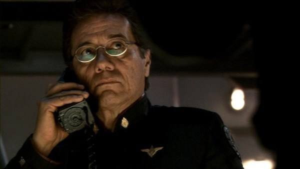

Contacting the Colonial Fleet
We have all heard the idiom that there is safety in numbers. If your Colony has been attacked by the Cylons, finding your way to the safety of the Colonial Fleet is paramount to survival. While we of the CDF will do everything in our power to protect the civilians of the 12 Colonies, we do not have the might of the Colonial Fleet. The safety offered by the Fleet is the only fortification that can protect humanity long-term. The information below will help you connect with the Colonial Fleet in the event of a Cylon attack.
- If you do not already have direct contact with the Colonial Fleet to receive instructions for rendezvous, the CDF maintains continuous contact with the Colonial Fleet via interstellar HAM radio at all times.
- If your phone is still working, contact your local CDF at (Your Local Area Code)-CDF-ORCE [(***)233-6789] and we will provide all assistance possible.
- If you do not have access to communications, the CDF has already established outposts and safehouses throughout the Twelve Colonies in hundreds of communities. Familiarize yourself with these locations and get to the closest one if at all possible.
- DO trust the CDF. We are always on humanity’s side, and it is our sworn duty to protect mankind.
- DO wait for contact and instruction before flying off into the void. The fleet can move quickly with their FTL Drives and there is very specific protocol when attempting to join the fleet. You will need clearance and an official escort before you can join the Fleet.
- DO get to your closest CDF outpost. We will be in communication with the Fleet and arranging transports as needed.
- DO NOT use anything other than a direct line using official encryption to try to communicate with the fleet after a Cylon attack. They will not respond because the Cylons may be listening.
- DO NOT lose hope. The CDF will do everything in our power to protect humanity. If you’re still out there, we’re still fighting. Humanity will prevail.

Figure 5.1: Keep your interstellar HAM radio ready at all times.